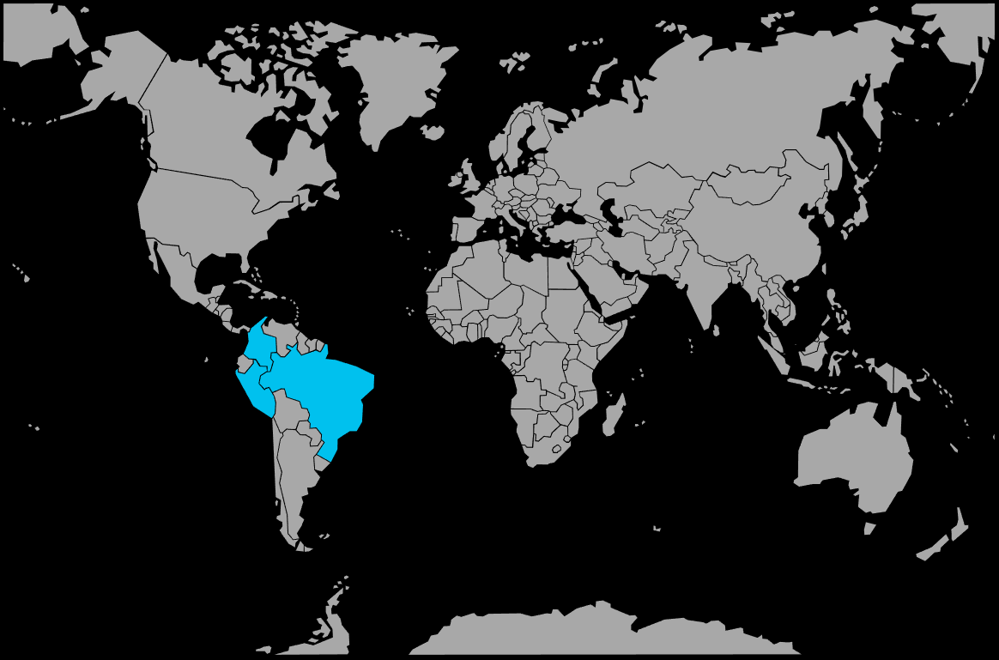

Systématique
- Ordre : Characiformes
- Famille : Characidae
- Genre : Paracheirodon
- Espèce : Paracheirodon innesi
Paracheirodon innesi, le néon bleu, est un des characidés les plus populaires en aquariophilie, reconnaissable à sa bande bleue iridescente latérale et à sa zone rouge limitée à la partie postérieure du corps.
Les adultes mesurent environ 3–4 cm et évoluent en bancs serrés dans la zone médiane, ce qui en fait un excellent poisson de banc pour les aquariums plantés de taille moyenne.
Espèce grégaire, Paracheirodon innesi doit être maintenu en groupe d’au moins 10 individus, idéalement plus, afin de réduire le stress et de favoriser un comportement de banc naturel.
Calme et parfois un peu craintif, il apprécie un décor composé de plantes, de racines et de zones tamisées, avec des colocataires paisibles et de taille similaire.
Mode : pondeur libre ; les œufs sont disséminés en pleine eau ou sur la végétation, sans soin parental, les adultes mangeant volontiers œufs et alevins.
La reproduction demande une eau très douce et acide, une lumière très faible et un bac spécifique ; les œufs et les jeunes sont sensibles à la lumière et doivent être maintenus dans la pénombre jusqu’à ce qu’ils grandissent.
Dimorphisme sexuel : peu marqué ; les femelles sont légèrement plus rondes et un peu plus grandes, alors que les mâles restent plus sveltes.
Espérance de vie : généralement 3 à 5 ans en aquarium, parfois davantage dans de bonnes conditions de maintenance.
Dans la nature, Paracheirodon innesi habite principalement les petits ruisseaux forestiers et affluents secondaires du bassin de l’Amazone, aux eaux acides, très douces, souvent sombres et teintées par les tanins, avec substrat de sable, racines et feuilles mortes.
Répartition
Origine naturelle :
- Amérique du Sud : ouest du bassin amazonien, principalement sud du Pérou, sud‑est de la Colombie et ouest du Brésil.
- Ruisseaux forestiers, petits affluents et zones calmes de rivières, plutôt que les grands canaux principaux à eaux chargées.
L’eau est généralement acide, très peu minéralisée et souvent brunâtre en raison des substances humiques libérées par la litière de feuilles et les débris végétaux.
Paramètres de maintenance
Température : 20 à 26 °C, avec un optimum autour de 22–24 °C.
pH : 6,0 à 7,0, eau légèrement acide à neutre.
GH : 4 à 10 °dGH, eau douce à moyennement douce.
Courant : lent à faible, avec une filtration efficace mais un rejet doux.
Volume conseillé : à partir de 80 L pour un banc d’une dizaine d’individus, davantage pour de grands groupes ou un communautaire très peuplé.
Régime alimentaire
Régime : omnivore à tendance micro‑carnivore ; consomme en milieu naturel de très petits invertébrés, larves et micro‑organismes, et accepte en aquarium paillettes, micro‑granulés, nourritures congelées fines et petites proies vivantes.
Une alimentation variée à base de nauplies d’artémias, daphnies, cyclops et aliments secs de qualité soutient sa coloration, sa vitalité et sa résistance aux maladies.